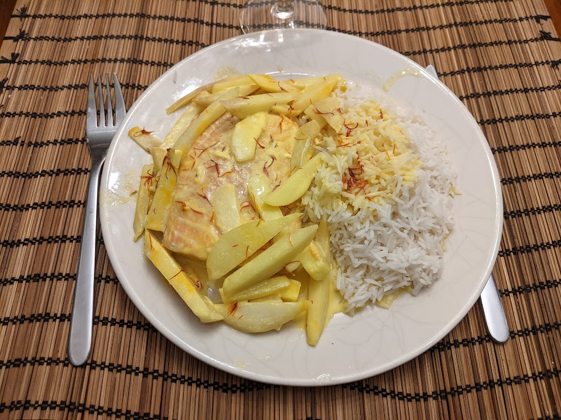

Saumon en papillote de poires

Pour 4 personnes :
- Quatre pavés de saumon
- Trois ou quatre poires
- Le jus d'un citron
- 20cl de crème fraîche
- Une cuillère à soupe de curcuma, ou quatre gousses de cardamone, ou bien un dé à coudre de safran
- Du gros sel
- Rincer les pavés de saumon, les égoutter avec du sopalin, et les laisser mariner une demi-heure dans du gros sel.
- Faire chauffer à feu doux la crème fraîche avec le curcuma, jusqu'à ce que ça frémisse.
- Éplucher les poires, les couper en lamelles, et les arroser du jus de citron.
- Rincer les pavés de saumon et les égoutter. Faire préchauffer le four à 200°C.
- Préparer les papillotes : mettre le saumon, les poires, et la crème fraîche, puis refermer. Enfourner une grosse vingtaine de minutes.
Remarque : la quantité de crème est prévue pour fournir en même temps une sauce pour du riz, par exemple. Si on sert le saumon avec des légumes, on peut en mettre moins.
Retour à la liste des recettes